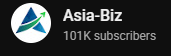

ตราสารหนี้
ตราสารหนี้ (Bond)
คือ สัญญาทางการเงินที่แสดงถึงการกู้ยืมเงินระหว่างผู้ซื้อและผู้ขาย
โดยผู้ซื้อตราสารหนี้เปรียบเสมือนเจ้าหนี้
และผู้ขายตราสารหนี้เปรียบเสมือนลูกหนี้ ผู้ขายตราสารหนี้ (ผู้ออก)
มีหน้าที่ต้องชำระเงินต้นคืนพร้อมดอกเบี้ยให้แก่ ผู้ซื้อตราสารหนี้ (ผู้ลงทุน)
ตามระยะเวลาที่กำหนดไว้ในสัญญา ซึ่งตราสารหนี้มีบทบาทสำคัญในตลาดการเงินหลายด้าน
ตัวอย่างเช่น
1.เป็นแหล่งเงินทุน ตราสารหนี้เป็นแหล่งเงินทุนสำคัญสำหรับทั้งภาครัฐและภาคเอกชน
รัฐบาลใช้ตราสารหนี้เพื่อระดมทุนสำหรับใช้จ่ายในกิจการของรัฐบาล เช่น การสร้างสาธารณูปโภค การศึกษา
และสาธารณสุข บริษัทเอกชนใช้ตราสารหนี้เพื่อระดมทุนสำหรับใช้ในกิจการของบริษัท เช่น การขยายกิจการ
การลงทุนในเครื่องจักรใหม่ และการชำระหนี้สิน
2.เป็นเครื่องมือบริหารความเสี่ยง ตราสารหนี้มักถูกมองว่าเป็นสินทรัพย์ที่มีความเสี่ยงต่ำ
เมื่อเทียบกับสินทรัพย์ประเภทอื่น เช่น หุ้น นักลงทุนมักลงทุนในตราสารหนี้
เพื่อกระจายความเสี่ยงในพอร์ตการลงทุนของตน
3.เป็นตัวชี้วัดสภาวะเศรษฐกิจ ราคาและอัตราผลตอบแทนของตราสารหนี้มักถูกใช้เป็นตัวชี้วัดสภาวะเศรษฐกิจ
ตัวอย่างเช่น เมื่อนักลงทุนคาดการณ์ว่าเศรษฐกิจจะดี ส่งผลให้ราคาตราสารหนี้จะสูงขึ้นเพราะนักลงทุนคาดหวังว่าผู้ออกตราสารหนี้จะมีรายได้และสามารถชำระหนี้ได้
ทำให้อัตราผลตอบแทนตราสารหนี้จะลดลง
ประเภทของผู้ออกตราสารหนี้
ตราสารนี้ในประเทศไทยสามารถแบ่งตามประเภทผู้ออกตราสารหนี้เป็น 2 กลุ่มหลัก ดังนี้
1. ตราสารหนี้ภาครัฐ (Government Debt Securities) ตราสารหนี้ภาครัฐ สามารถแยกตามอายุการถือครอง
ได้ เช่น ตั๋วเงินคลัง (Treasury bill) เป็นตราสารหนี้ระยะสั้น มีอายุไม่เกิน 365 วัน
และพันธบัตรรัฐบาล (Loan bond) เป็นตราสารหนี้ระยะยาว
มีอายุตั้งแต่ 365 วันขึ้นไป ตราสารหนี้ภาครัฐเปรียบเสมือนสัญญาที่รัฐบาลเป็นผู้ออกเพื่อกู้ยืมเงินจากประชาชนและนักลงทุน
โดยรัฐบาลสัญญาว่าจะจ่ายดอกเบี้ยพร้อมเงินต้นคืนให้แก่ผู้ถือเมื่อครบกำหนด
เปรียบเสมือนประชาชนเป็นเจ้าหนี้ของรัฐบาล ในประเทศไทยประเภทตราสารหนี้ภาครัฐจะประกอบไปด้วย
พันธบัตรรัฐบาล พันธบัตรรัฐวิสาหกิจ แต่ในบางประเทศจะมีตราสารหนี้ภาครัฐในหน่วยย่อยๆ
ตัวอย่างเช่น พันธบัตรองค์กรภาครัฐ พันธบัตรเทศบาล
2. ตราสารหนี้เอกชน (Corporate Bonds) ตราสารหนี้เอกชน
คือ สัญญาที่บริษัทเอกชนกู้ยืมเงินจากนักลงทุน โดยบริษัทจะออกตราสารหนี้เพื่อระดมทุนไปใช้ในการดำเนินงานหรือลงทุน
ผู้ซื้อตราสารหนี้จะมีสถานะเป็นเจ้าหนี้ ส่วนบริษัทจะมีหน้าที่จ่ายดอกเบี้ยและเงินต้นคืนให้แก่ผู้ซื้อตามสัญญาที่กำหนดไว้
วิธีการลงทุนในตราสารหนี้
การลงทุนในตราสารหนี้มีช่องทางให้นักลงทุนสามารถซื้อขายแลกเปลี่ยนตราสารหนี้ได้ด้วยกัน 3 วิธี ดังนี้
1.การลงทุนทางตรงผ่านการซื้อขายในตลาดแรกจากผู้ออกตราสารหนี้
โดยทั่วไปการซื้อขายในตลาดแรกจะมี 2 รูปแบบ แบบแรกเสนอขายให้แก่นักลงทุนในวงจำกัด (Private Placement: PP)
และแบบที่สองเสนอขายแก่ประชาชนทั่วไปในวงกว้าง (Public Offering: PO)
ซึ่งทั้งสองแบบนักลงทุนสามารถซื้อได้จากสถาบันการเงินที่เป็นผู้จัดจำหน่ายหรือตัวแทนจำหน่ายได้
2.การซื้อขายเปลี่ยนมือระหว่างนักลงทุนตราสารหนี้ด้วยกันเองผ่านตลาดรอง
การซื้อขายตราสารหนี้ในตลาดรองสามารถติดต่อกับสถาบันการเงิน และบริษัทหลักทรัพย์ที่มีธุรกรรมการค้าตราสารหนี้ได้โดยตรง
3.สำหรับนักลงทุนรายย่อยหรือมือใหม่ที่ยังไม่เชี่ยวชาญ
ก็สามารถลงทุนตราสารหนี้ทางอ้อมผ่านการลงทุนในกองทุนตราสารหนี้ได้
โดยผู้เชี่ยวชาญอย่างบริษัทหลักทรัพย์จัดการกองทุน (บลจ.)
เป็นผู้บริหารจัดการให้ นักลงทุนสามารถซื้อกองทุนตราสารหนี้ได้จากบริษัทหลักทรัพย์จัดการกองทุน
หรือตัวแทนขายหน่วยลงทุน
ตราสารหนี้คืออะไร ?
ขอบคุณข้อมูลจากช่อง
3 เรื่องแนะนำเกี่ยวกับการเงินการลงทุน

บิตคอยน์
สิ่งที่หลายคนยังไม่รู้เกี่ยวกับบิตคอยน์
บิตคอยน์ เกิดขึ้นมาได้อย่างไร?

ทองคำ
สิ่งที่คุณควรรู้ก่อนซื้อทองคำ
ทำไมทองคำถึงมีมูลค่ามากขึ้นเรื่อยๆ?

คำนวนดอกเบี้ย
คำนวนดอกเบี้ยเป็นดียังไง
ทำไมเราต้องรู้เรื่องนี้?
เคล็ดลับเพื่อความมั่นคงทางการเงิน
ควรวางแผนการใช้จ่ายให้เหมาะสมกับรายรับ โดยพิจารณาว่าค่าใช้จ่ายที่จำเป็นมีอะไรบ้าง แล้วกันรายรับส่วนหนึ่งไว้สำหรับเป็นเงินออมและค่าใช้จ่ายที่จำเป็นก่อน
หากพบว่ารายรับไม่เพียงพอก็ควรหาทางลดรายจ่ายหรือเพิ่มรายได้
ควรเตรียมรับมือกับความไม่แน่นอน
มีเงินออมเผื่อฉุกเฉิน 3 - 6 เท่าของรายจ่ายจำเป็นและภาระผ่อนหนี้ต่อเดือน
ตรวจสอบสวัสดิการและประกันสุขภาพที่มีอยู่ว่าครอบคลุมแค่ไหน หากไม่เพียงพอ การทำประกันสุขภาพเพิ่มเติมก็อาจเป็นอีกทางเลือกหนึ่ง
พิจารณาเรื่องความไม่แน่นอนของรายได้ในอนาคต ก่อนตัดสินใจกู้ยืมเงินทุกครั้ง
อาจหาแหล่งรายได้เสริมหรือนำสินทรัพย์ที่มีไปลงทุนให้งอกเงยขึ้น